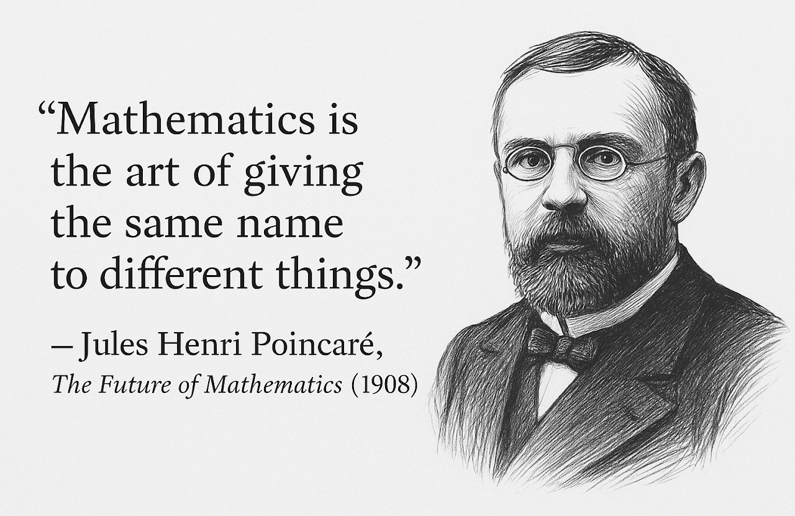

Research Interests
My research focuses on uncertainty and information in economic decision-making, with applications in finance and insurance.
I approach these questions using tools from financial and actuarial mathematics, and stochastic control and optimal stopping.
Publications
【1】Ferrari, G., Schuhmann, P., and Zhu, S. (2022). Optimal Dividends under Markov-modulated Bankruptcy Level. Insurance: Mathematics and Economics, 106, 146-172.
【2】Zhu, S., and Shi, J. (2022). Optimal Reinsurance and Investment Strategies under Mean-variance Criteria: Partial and Full Information. Journal of Systems Science and Complexity, 35(4), 1458-1479.
【3】Chen, A., Ferrari, G., and Zhu, S. (2026). Striking the balance: life insurance timing and asset allocation in financial planning. Scandinavian Actuarial Journal, (2), 222-261.
【4】Chen, A., Hinken, M., & Zhu, S. (2026+). Modeling of Biological and Subjective Age with Economic Applications. Scandinavian Actuarial Journal.
Working Papers
【5】Ferrari, G., and Zhu, S. (2022). On a Merton Problem with Irreversible Healthcare Investment. https://arxiv.org/abs/2212.05317. Revise & Resubmit with Finance and Stochastics.
This paper proposes a tractable dynamic framework for the joint determination of optimal consumption, portfolio choice, and healthcare irreversible investment. The resulting optimization problem is formulated as a stochastic control-stopping problem with a random time-horizon and state-variables given by the agent’s wealth and health capital. We transform this problem into its dual version, which is now a two-dimensional optimal stopping problem with interconnected dynamics and finite time-horizon. In the original coordinates, the agent thus invests into healthcare whenever her wealth exceeds an age- and health-dependent transformed version of the optimal stopping boundary.
【6】Ferrari, G., and Zhu, S. (2023). Optimal Retirement Choice under Age-dependent Force of Mortality. https://arxiv.org/abs/2311.12169. Revise & Resubmit with SIAM Journal on Financial Mathematics.
This paper examines the retirement decision, optimal investment, and consumption strategies under an age-dependent force of mortality. We formulate the optimization problem as a combined stochastic control and optimal stopping problem with a random time horizon, featuring three state variables: wealth, labor income, and force of mortality. Regularity of the optimal stopping value function is derived and the boundary is proved to be Lipschitz continuous, and it is characterized as the unique solution to a nonlinear integral equation, which we compute numerically. In the original coordinates, the agent thus retires whenever her wealth exceeds an age-, labor income- and mortality-dependent transformed version of the optimal stopping boundary.
【7】Chen, A., and Zhu, S. (2025). Optimal Consumption under Smooth Ambiguity. Available at SSRN 5131016. Submitted.
We study how individuals choose contingent consumption plans when the probabilities of future states are ambiguous and utility depends on the realized state. In both static one-period and intertemporal smooth-ambiguity settings, we show that ambiguity aversion shifts the decision-maker's subjective prior and alters the discount factor. We provide explicit sufficient conditions that characterize these shifts. Applying our framework to insurance economics, we illustrate how ambiguity aversion offers a compelling explanation for the "underinsurance puzzle" and the "annuity puzzle"-two longstanding challenges to standard expected-utility models.
【8】Huang, Y. J., & Zhu, S. (2025). Mean-Variance Stackelberg Games with Asymmetric Information. https://arxiv.org/abs/2509.03669. Submitted.
We consider two investors who perform mean-variance portfolio selection with asymmetric information. Their portfolio selection is interconnected through relative performance concerns. We model this as Stackelberg competition. To prevent information leakage, the leader adopts a randomized strategy selected under an entropy-regularized mean-variance objective. In the idealized case of continuous sampling of the leader's trading actions, we derive a Stackelberg equilibrium where the follower's trading strategy depends linearly on the actual trading actions of the leader and the leader samples her trading actions from Gaussian distributions.
【9】Borgonovo, E., Chen, A., Marinacci, M., & Zhu, S. (2026). Nonconcave Portfolio Choice under Smooth Ambiguity. https://arxiv.org/abs/2603.08552. Submitted.
We study continuous-time portfolio choice with nonlinear payoffs under smooth ambiguity and Bayesian learning. We develop a general framework for dynamic, non-concave asset allocation that accommodates nonlinear payoffs, broad utility classes, and flexible ambiguity attitudes. Dynamic consistency is obtained by a robust representation that recasts the ambiguity-averse problem as ambiguity-neutral with distorted priors. As a leading application, delegated management with convex incentives illustrates that ambiguity aversion shifts beliefs toward adverse states, limits the range of states that would otherwise trigger more aggressive risk taking, and reduces volatility through lower risky exposure.
【10】Chen, A., Chi, Y., & Zhu, S. (2026). Long-Term Care Insurance and Informal Family Care: A Subgame-Perfect Equilibrium Analysis. Available at SSRN 5228627. submitted.
We analyze LTC insurance demand in a parent-child game in which informal family care affects both formal-care expenditures and parental health. The parent chooses insurance before dependence is realized, anticipating that the child will subsequently choose informal care in response to care needs and potential inheritance. We show that the wealth-health cross-partial derivative is central to optimal LTC coverage. Extensions with risky and ambiguous health losses show that severity risk creates a precautionary insurance motive, while ambiguity aversion can further increase insurance demand.
Research Creed
